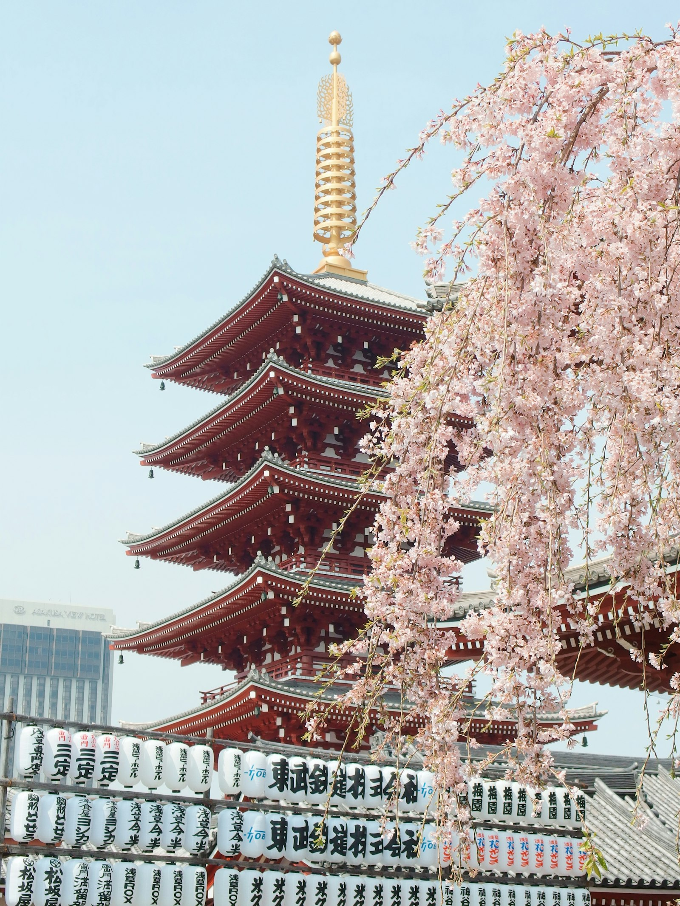

客 室
ROOMS全八室、それぞれに趣を。
和洋室・洋室・和室の三タイプ、全8室。いずれも定員2名の、大人のための静かなしつらえです。
全室にウォシュレットトイレ・信楽焼の洗面台・無料Wi-Fiを備えております。
湯の街に、明治より。
湯畑まで徒歩二分 ― 貸切風呂と色浴衣の宿
創業明治二十三年。
湯の街 草津と共に、
歩んで参りました。
末広屋旅館は、草津バスターミナルより徒歩2分、名所・湯畑まで徒歩2分。
湯の街の真ん中にたたずむ、全8室の小さな宿でございます。
2022年3月に全館をあらためましたが、明治より受け継いだ「湯の街の気軽な宿」という心持ちは、そのままに。
四つの貸切風呂と選べる色浴衣で、草津の湯と温泉街の散策を心ゆくまでお楽しみください。

全八室、それぞれに趣を。
和洋室・洋室・和室の三タイプ、全8室。いずれも定員2名の、大人のための静かなしつらえです。
全室にウォシュレットトイレ・信楽焼の洗面台・無料Wi-Fiを備えております。
湯畑源泉、四つの貸切風呂。
いつでも、何度でも。
天下の名湯・草津の湯畑源泉を、天然温泉100%掛け流しで。四つのお風呂はすべて貸切にて、予約不要・二十四時間、何度でもご自由にお使いいただけます。サウナも併設しております。
壱乃湯ICHI NO YU
弐乃湯NI NO YU
天満月乃湯AMAMITSUKI
美月乃湯MIZUKI

お気に入りの一枚で、
湯の街へ。
女性用は20種類以上、男性用も5種類以上の色浴衣をご用意しております。
お好みの柄を選んで、下駄を鳴らして湯畑へ。
夜の湯けむりに浮かぶ温泉街の散策は、草津ならではの愉しみです。
バスターミナルから徒歩二分。
湯畑まで徒歩二分。
| 所在地 | 〒377-1711 群馬県吾妻郡草津町草津55番地 |
|---|---|
| お電話 | 0279-88-3316 |
| お車で |
関越自動車道 練馬ICより約90分 無料駐車場 全8台（1組1台・建物裏側） 詳細はこちら  駐車場案内を見る
駐車場案内を見る
|
| 電車・バスで | 上越新幹線 高崎駅より吾妻線・バス利用 北陸新幹線 軽井沢駅よりバス利用 草津温泉バスターミナルより徒歩2分 |